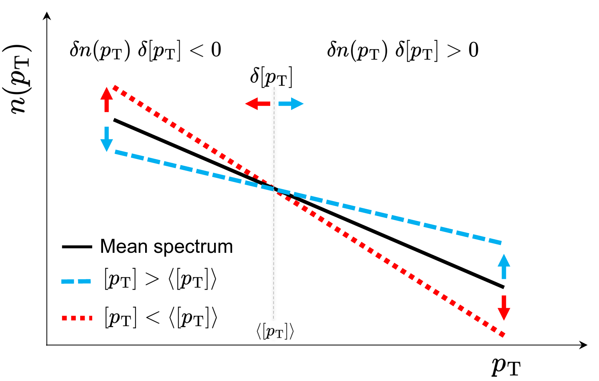
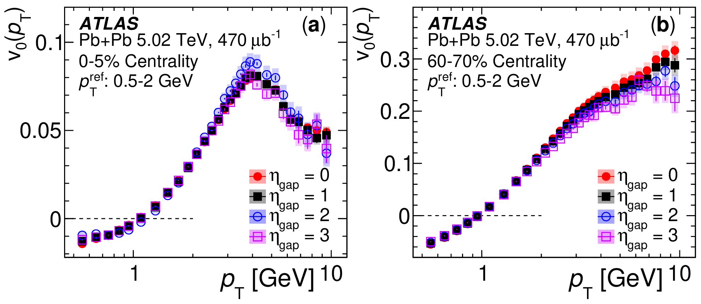
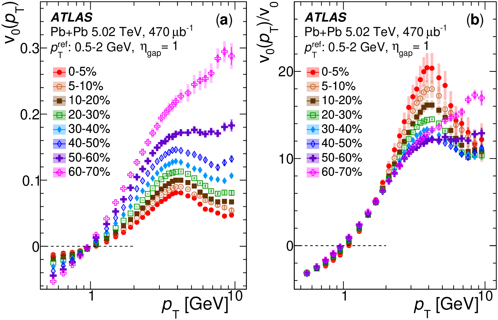
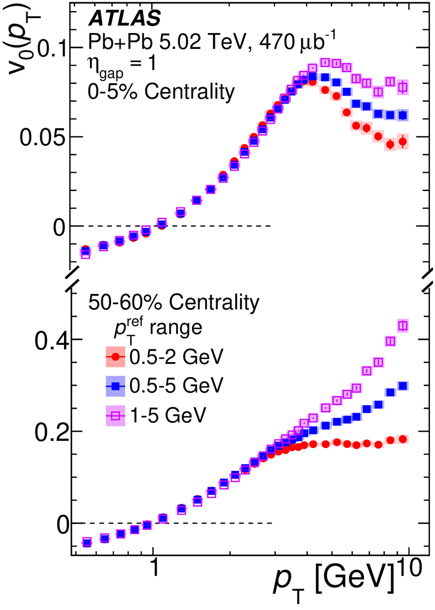
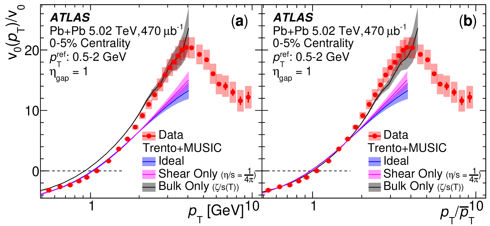

Evidence for the Collective Nature of Radial Flow
Pb+Pb collisions with the ATLAS detector
Overview
Radial flow is one of the fundamental manifestations of the collective expansion of the quark–gluon plasma (QGP). While anisotropic flow has been extensively established as a collective phenomenon and developed into a precision probe of QGP properties, comparable direct experimental evidence for the global collective nature of radial flow had been missing. This work introduces the first measurement of the transverse-momentum dependence of radial-flow fluctuations, \(v_0(p_T)\), over \(0.5 < p_T < 10\) GeV in Pb+Pb collisions at \(\sqrt{s_{\mathrm{NN}}}=5.02\) TeV with the ATLAS detector. The measurement tests radial flow against three characteristic hallmarks of collectivity: long-range correlations in pseudorapidity, factorization in \(p_T\), and a centrality-independent response shape. All three are observed in the flow-dominated regime, providing direct experimental evidence for the global collective nature of radial flow. Beyond establishing collectivity, comparisons with hydrodynamic calculations demonstrate that \(v_0(p_T)\) is sensitive to the bulk viscosity of the QGP. The measurement therefore establishes differential radial flow as a new tool for studying both the collective dynamics and transport properties of the strongly interacting QGP medium.
Analysis
Why establish radial-flow collectivity?
The collective expansion of the quark–gluon plasma can manifest itself through two complementary forms of flow. Anisotropic flow reflects the hydrodynamic response to the initial spatial shape of the collision, while radial flow reflects the response to fluctuations in the transverse size and density of the system.
For anisotropic flow, its collective origin has been established experimentally through a broad set of characteristic signatures, including long-range correlations, factorization, and a universal hydrodynamic response. Radial flow, despite being of comparable fundamental importance, had not been subjected to the same direct experimental tests.
This distinction matters because radial-flow observables are increasingly being used to constrain properties of the QGP. Event-by-event fluctuations of the mean transverse momentum, \([p_T]\), exhibit striking behavior in ultra-central Pb+Pb collisions, including a sharp suppression of their variance and a rapid increase of \(\langle[p_T]\rangle\) with multiplicity. These features have been interpreted within a hydrodynamic picture in which radial-flow fluctuations originate from both global collision geometry and local density fluctuations.
Before such observables can be used as precision probes of the QGP equation of state or transport properties, however, an important logical step must be established experimentally: is radial flow itself genuinely collective?
Differential radial flow
To answer this question, the analysis introduces the differential radial-flow observable \(v_0(p_T)\).
Its physical origin can be understood by considering events with approximately fixed total entropy. An event with a smaller transverse collision area develops stronger pressure gradients and therefore experiences a larger radial push. Its particle spectrum becomes flatter and its event-by-event mean transverse momentum \([p_T]\) increases. Conversely, an event with a larger transverse area experiences weaker radial expansion and develops a steeper spectrum.
This produces a characteristic correlation between fluctuations of the local particle yield and fluctuations of \([p_T]\). At low \(p_T\), the two quantities are anticorrelated; near the ensemble mean transverse momentum the correlation crosses zero; and at higher \(p_T\) it becomes positive.
The differential observable is constructed from this correlation,
\[ v_0(p_T) = \frac{1}{v_0} \frac{ \langle \delta n(p_T)\delta[p_T]\rangle }{ \langle n(p_T)\rangle\langle[p_T]\rangle }, \]
where \(n(p_T)\) is the normalized particle spectrum and \(v_0\) is the corresponding integrated radial-flow fluctuation.

A two-subevent method is used in which the local spectrum and \([p_T]\) are measured using particles separated in pseudorapidity. This suppresses short-range correlations and allows the global component of the radial-flow signal to be isolated.
Experimental hallmarks of collectivity
The key idea of the measurement is to test radial flow against the same experimental criteria that are traditionally used to establish anisotropic collectivity.
Long-range correlations
A global collective expansion should generate correlations extending over large separations in pseudorapidity. Experimentally, \(v_0(p_T)\) is found to be largely insensitive to the pseudorapidity gap used between the two subevents, as shown in Figure 2.

This behavior is observed in both central and peripheral Pb+Pb collisions. Deviations appear primarily at larger \(p_T\), where contributions from jets and other non-flow effects become increasingly important.
Centrality-independent response
The absolute magnitude of \(v_0(p_T)\) varies strongly with collision centrality. Much of this variation reflects changes in the magnitude of the initial-state size fluctuations rather than changes in the subsequent hydrodynamic response.
To reduce this dependence, the differential measurement is divided by its integrated counterpart, \(v_0\). As shown in Figure 3, the resulting quantity, \(v_0(p_T)/v_0\), exhibits a striking behavior: curves from widely separated centrality intervals collapse onto an approximately common shape in the flow-dominated region.

This centrality-independent shape indicates that very different initial collision geometries are being transformed into momentum space through a common underlying hydrodynamic response.
Factorization
A collective mode generated by a global hydrodynamic expansion is also expected to satisfy factorization. This is tested by changing the reference \(p_T\) interval used to define \([p_T]\) and its event-by-event fluctuations. For \(p_T \lesssim 3\) GeV, the measured \(v_0(p_T)\) is essentially insensitive to this choice, demonstrating factorization in the region dominated by soft collective physics, as shown in Figure 4.

At larger transverse momentum, the factorization begins to break. In peripheral collisions, this behavior is consistent with increasing contamination from residual non-flow correlations, while in central collisions the high-\(p_T\) response becomes sensitive to jet-quenching phenomena.
Connection to QGP transport properties
Once the collective nature of radial flow is established, the differential observable can be used to investigate properties of the medium itself.
The measured \(v_0(p_T)/v_0\) is compared with hydrodynamic calculations based on the Trento+MUSIC framework. The ideal-hydrodynamic calculation and the calculation including shear viscosity give very similar predictions and underestimate the data at high \(p_T\), failing to reproduce the measured shape. In contrast, the inclusion of a temperature-dependent bulk viscosity, \(\zeta/s(T)\), substantially modifies the high-\(p_T\) behavior and provides a much better description of the data. After additionally accounting for the difference in the mean transverse momentum between model and data by scaling the horizontal axis with \(\bar{p}_T\), the agreement improves further, as shown in Figure 5.

The normalization by the integrated \(v_0\) suppresses much of the influence of the initial-state fluctuation magnitude and emphasizes the hydrodynamic response. The improved description of the measured shape after including bulk viscosity demonstrates the sensitivity of differential radial flow to \(\zeta/s\), establishing \(v_0(p_T)\) as a new experimental probe of QGP transport properties.
Broader implications
By exhibiting long-range correlations, a centrality-independent response shape, and factorization, radial flow satisfies the same key hallmarks of collectivity established for azimuthal flow. These results elevate radial flow to the rigorous standing of azimuthal flow, establishing it as a powerful new probe for constraining QGP transport properties.
The same observable also opens a path toward future system-size studies. Measurements of \(v_0(p_T)\) in systems such as p+O, O+O, Ne+Ne, and other small (p+p) or exotic collision systems (\(\gamma\)+Pb) could provide an independent probe of collectivity, help explore how the emergence of QGP-like behavior evolves with system size, and ultimately help identify the smallest collision systems capable of forming a QGP droplet.
Additional Resources
Official ATLAS Coverage
The ATLAS Collaboration featured this measurement in its public coverage of Quark Matter 2025, with an accessible discussion of the radial-flow result and its implications for collectivity and QGP transport properties.
SQM 2026 Proceedings
A proceedings contribution based on the SQM 2026 presentation is currently in preparation. The publication will be added here once available.